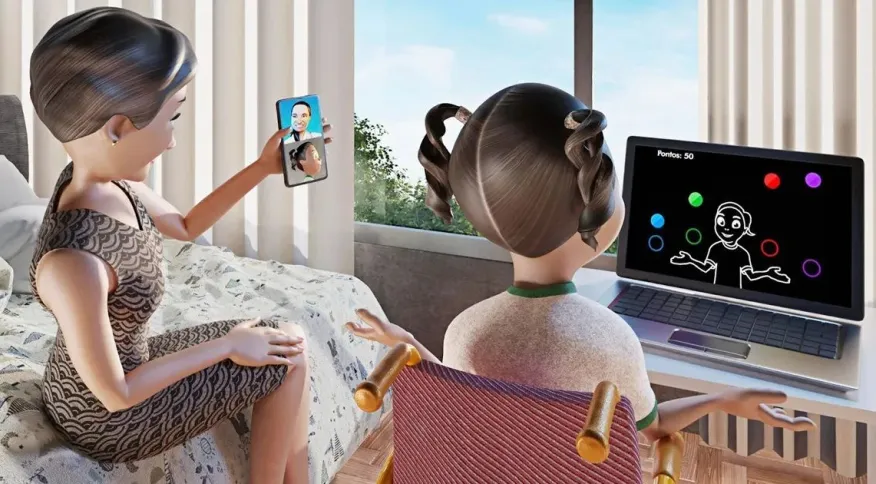

Metaverso pode ajudar na reabilitação de pessoas com deficiência, mostra estudo
Lucas Rocha da CNN em São Paulo 10/01/2023 às 10:35
Em pessoas com paralisia cerebral, a aplicação de tarefas em realidade virtual por meio da telereabilitação auxiliou no engajamento e na melhora de desempenho
O metaverso é um mundo virtual que permite a interação entre pessoas a partir de avatares personalizados, além da circulação por espaços construídos que simulam a realidade como conhecemos.
Pesquisadores da Universidade de São Paulo (USP) descobriram que o metaverso pode ter uma outra função além do entretenimento: ajudar na reabilitação de pessoas com deficiência.
Um estudo publicado pelo grupo da Escola de Artes, Ciências e Humanidades mostrou que em pessoas com paralisia cerebral, a aplicação de tarefas em realidade virtual por meio da telereabilitação auxiliou no engajamento, na melhora de desempenho e foi uma opção de incentivo à prática de atividade física, inclusive durante a pandemia.

Metaverso é um complemento dos métodos de recuperação tradicional, diz pesquisador
Realidade virtual e paralisia cerebral
O estudo sobre a telereabilitação de pessoas com paralisia cerebral foi realizado entre março e junho de 2020 e contou com a participação de 44 pessoas. O trabalho foi realizado durante o período de isolamento social da pandemia de Covid-19, que impedia a realização da terapia tradicional.
Pessoas com paralisia cerebral apresentam distúrbios motores associados a aspectos como mudanças de sensação, aprendizado e comunicação. Com o objetivo de melhorar a performance motora, os participantes realizavam práticas propostas com o apoio remoto de um pesquisador e auxílio de um responsável.
Uma das atividades consistia na coleta de bolinhas coloridas que caíam no visor do computador. Os movimentos dos participantes eram detectados pela câmera da máquina. Durante o jogo, a percepção de esforço e cansaço dos participantes, foi avaliada.
A escala é baseada nas sensações sentidas durante o exercício, como fadiga muscular e aumento da frequência cardíaca e respiratória. Também foram analisadas a performance motora, medida pela precisão dos movimentos e o número de acertos e erros, e a motivação e satisfação dos participantes.
De acordo com o estudo, a melhora na performance no jogo não foi constante. No entanto, a recepção dos jogos pelos pacientes foi positiva, tendo sido considerado divertido pelos participantes, que se mostraram interessados em continuar a usá-lo nas suas terapias.
“As pessoas gostam mais, elas têm mais motivação para fazer uma reabilitação em ambiente virtual”, afirma o professor do curso de Educação Física e Saúde Carlos Monteiro, coordenador da iniciativa.
Estratégia complementar
A pesquisa desenvolvida pelo grupo da USP não utiliza o metaverso imersivo, aquele que conta com óculos de realidade virtual. De maneira mais simples, é possível realizar as tarefas apenas com um computador ou celular e uma boa conexão com a internet.
Segundo os especialistas, isso facilita o acesso das pessoas a essa forma de reabilitação e evita que elas precisem gastar com óculos virtuais caros ou se deslocar para laboratórios onde existem equipamentos avançados. Com o uso do metaverso não imersivo, o terapeuta também pode atender mais de um paciente por vez e pessoas de diferentes estados passam a ter acesso a esse tratamento.
Apesar dessas vantagens, Monteiro lembra que o metaverso é um complemento dos métodos de recuperação tradicional, não uma substituição. “Percebemos que, quando tarefas no ambiente virtual são mais difíceis que no real, isso facilita na hora de realizar as atividades na vida real”, afirma.
Ele aponta como desafios para o amplo uso investidores acreditarem no uso do metaverso para fins de saúde, e a dificuldade de algumas pessoas para se adaptarem a plataformas digitais. Para ele, porém o uso do metaverso na educação e saúde pode ser adiado, mas é inevitável.